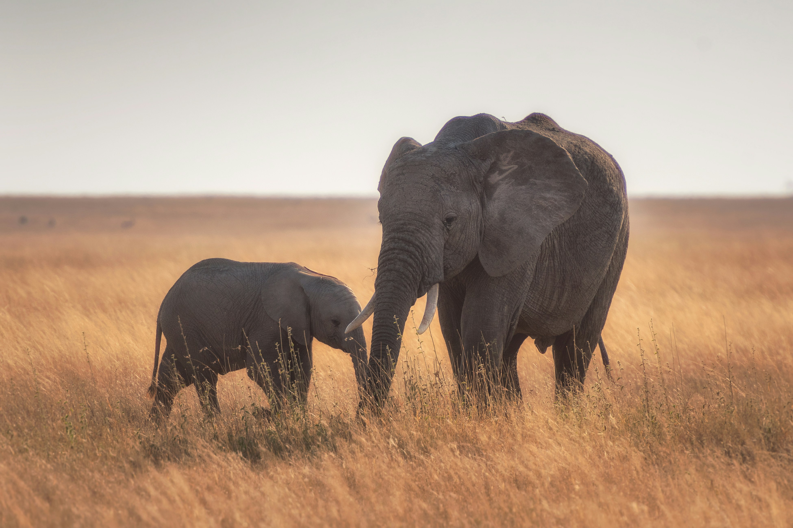

Anjing malang di buang sampai kelaparan
Bilkis dengan kondisi sangat memprihatinkan seluruh badan kotor dan kurus berada di depan teras rumah kosong,kemungkinan bilkis sengaja di buang oleh pemiliknya.
 Nunuk Rahayu
Nunuk Rahayu
Rp 914.000
Sisa 50 Hari
Terkumpul
Bantuan Pakan untuk Hewan Liar dan Terlantar
Hai teman-teman, Kalian sering nggak sih merasa sedih kalau melihat kucing atau anjing di jalan-jalan yang tak bertuan?
Teman Hewan
Rp 914.000
Sisa 50 Hari
Terkumpul

Dukung Pelestarian Satwa & Habitatnya!
Tahukah kamu, diperkirakan sebanyak 300,000 jenis satwa luar atau sekitar 17% satwa di dunia terdapat di Indonesia!
Harpa Indonesia
Rp 914.000
Sisa 50 Hari
Terkumpul

 Didin Supriadin
Didin Supriadin
Cinta dan harapan untuk bobi dan hewan terlantar
Saya menemuka dua ekor bulteril yang sedang terlantar, dan saya pun langsung merasa kasihan, dan berinisiatif untuk membawa nya dan merawat nya di rumah.
Didin Supriadin
Rp 914.000
Sisa 50 Hari
Terkumpul